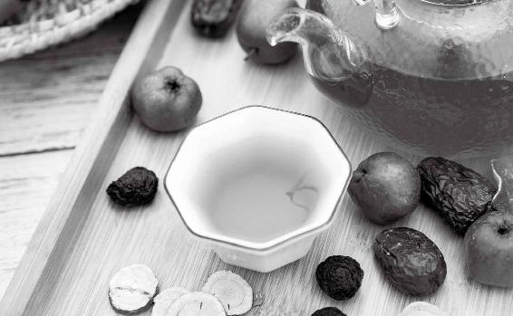

出门在外，特别是在长途旅行时，人们容易感“风”“寒”“湿”三种不正之气，造成抵抗力下降，此时病毒最易乘虚而入。
所以，我建议在到达目的地后，用香菜加上陈皮做代茶饮来喝。这个代茶饮不用每日都喝，外出后喝一两次就可以了。

一般来说，下面这6种人对于呼吸道病毒的抵抗力比较弱：
·5岁以下儿童
·65岁以上老年人
·有慢性病（心脑血管疾病、糖尿病等）的人
·肥胖的人
·孕妇
·气虚，一动就出汗的人
具体到某一种病症，还要分体质而言。例如体内有寒的人更容易得风寒感冒，体内有热的人更容易得风热感冒。
在这次新冠肺炎疫情期间，哪些人属于高危易感人群呢？我认为是湿气重的人群。
在新冠肺炎确诊病例中，一开始老年人比较多，而且容易转为危重病症，因为老年人湿气比较重。
分析早期的病例，那些危重病例、死亡病例，一般患者都有“三高”（高血压、高血糖、高血脂）、糖尿病等慢性病，还有的人曾经患过脑梗，这就说明患者身体内的痰湿非常重。痰湿非常重，就营造了一个病毒非常喜欢的体内环境，所以也就更容易受到病毒的侵袭。而在病毒侵袭之后，身体免疫系统变弱，从而造成更多的问题。
我们可以看到，在已知的新冠肺炎病例中，有些重症患者到最后，整个肺都变成白肺，肺部被黏液闭住了，从而造成呼吸困难，这就是湿气太重了。
所以，我们要想防治新冠肺炎，就要让自己的身体内没有湿气，让自己身体内的环境保持干净。
我建议，在新冠肺炎疫情期，我们要尽量吃一些祛湿的食材、调料，家里有什么就用什么；身体湿气祛得越多，我们就越安全。
春季容易有呼吸道疾病的人，可以每周喝两次防感护生汤。
平常年份我们是在春天的后半段最需要喝防感护生汤，但在一些特殊年份，比如2020年，《顺时生活：2020健康日历》书中会提示：易感人群要从立春开始喝防感护生汤。防感护生汤可以祛风湿，养脾胃，清热解毒，提高免疫力，预防流行病。
原料：鲜荠菜1把、萝卜缨1把、牛蒡半根、干香菇3个。
做法：1.干香菇洗净、泡发、切块，牛蒡滚刀切块。
2.锅里放水，放一点点油和盐，放香菇和牛蒡煮开，再放萝卜缨煮20分钟后，放入荠菜再煮1分钟起锅。
允斌叮嘱：
1.牛蒡不要去皮。
2.要用干香菇，不用新鲜的。
3.每周喝两次。
4.没有条件做汤，也可以每日喝牛蒡茶和荠菜水来代替。
防感护生汤是很平和的，家里的男女老少都可以喝，孕妇也可以喝。建议每周喝两次。
即使不是易感人群，如果有条件煮汤的话，我也建议春天喝这道汤。它滋味清淡鲜香，能清除脾胃的积滞，是很适合全家人春季养生的美食。
这道汤最重要的原料是荠菜，它能帮助我们祛除体内的陈寒。
这跟冬天不注意避寒大有关系。
《黄帝内经》中说：“冬伤于寒，春必病温。”冬天受寒，寒气深入人体潜伏下来，变成“陈寒”。到了春天，郁积化热，就会使人上火、发热、咳嗽、眼睛发红，甚至染上传染病。
什么是陈寒呢？这是我家传下来的一个特殊说法，把人体内积存的陈年寒气，称为陈寒。
从小母亲就告诉我们，一定要吃荠菜，它能“搜”陈寒。
所以从立春的春盘、人日的七日羹到防感护生汤、三月三上巳节…… 整个春天我们都离不开荠菜。荠菜是春天男女老少都应该吃的一种菜。它能帮助我们预防春天的流行病和传染病，包括风热感冒和麻疹。它还可以调理上火后嗓子疼、眼睛发红、流鼻血、牙龈出血等症状。
鲜嫩的荠菜，怎么吃都好吃，炒着吃，煮汤喝，或做馅儿包馄饨。老荠菜可以留下晒干入药用。荠菜要吃就吃全株，整株药性才好。
今天喝了两餐的荠菜汤，真好喝，越来越喜欢荠菜了。顺时生活，提高免疫力，让邪气无法侵入，这也是全民抗病毒的一种方式。
——英子
出门在外，特别是在长途旅行时，人们容易感“风”“寒”“湿”三种不正之气，造成抵抗力下降，此时病毒最易乘虚而入。
所以，我建议在到达目的地后，用香菜加上陈皮做代茶饮来喝。这个代茶饮不用每日都喝，外出后喝一两次就可以了。
原料：香菜（芫荽）3〜5棵，新鲜红橘皮或川陈皮1个。
做法：1.香菜用加面粉的清水泡10分钟，洗净，连根一起切碎；红橘皮或川陈皮切成丝。
2. 把香菜末和橘皮丝（陈皮丝）一起放入杯中，冲入沸水，闷5分钟后饮用。
功效：激发脾胃的消化功能，防治水土不服。
允斌叮嘱：香菜一定要连根（香菜根是特别好的东西）一起切碎。香菜有什么药用价值呢？它能醒脾，又能帮助我们通心阳。呼吸道疾病例如流感、肺炎等，调理不当容易伤及心脏，留下后遗症。所以在新冠肺炎疫情期，我就曾建议朋友们家里要多备一点香菜。
这个方子全家人都可以喝。我建议在疫情时期外出后，或者是在长途旅行后，都喝一点，它能帮助我们发散身体在室外时感受的湿气，帮助我们抗病毒。如果您吃了一些生冷之物，肚子不舒服，也可以喝它。
如果一个人生病，吃药治疗，则需要通过脾胃消化吸收，还需要食物来补充营养，让身体有能量去对抗疾病。这两者都依赖脾胃的功能。
所以古代医生治病，特别重视保护脾胃。不管什么病，若是脾胃功能差了，就不好办了。
在传染病流行时节，外出遇到雨雪降温天气，可以在芫香行人饮中加入3片生姜（带皮），也就是香菜陈皮姜水。
注意：
一般情况下生姜不去皮；如果感觉受寒明显，就把生姜去皮。
这道茶饮有发散作用，喝过之后，不要马上出门吹风受寒，否则外邪容易侵入人体。
我给这个茶方取名叫“芫香正气水”，因为它相当于温和的藿香正气水，可以调理外感风寒、内伤饮食引起的感冒低烧或肠胃不适（例如恶心、呕吐、腹泻），老年人、孩子、孕妇都可以喝。
我前几天出门感觉有凉风，回来觉得不舒服，也不想动，头顶痛，眼也不想睁，马上喝了一杯芫香行人饮，一个小时后感觉眼睛舒服了，晚上又喝了一次，第二天早上起来满血复活了，感谢老师！
——西贝
（2020 年）2 月 6 日我在沙发上睡的，没睡好，第二天中午刚洗完澡，只穿了薄薄的一层衣服，头发没吹干便立刻在电脑前忘我地工作了很久。忙完工作后，觉得自己冻着了，盖好被子，过了很久还是浑身冰冷。估计刚洗完澡工作时受了贼风了。在这（新冠肺炎疫情期）节骨眼儿上千万不能出现任何问题，我立即查看《吃法决定活法》《回家吃饭的智慧》和《茶包小偏方，喝出大健康》。按照书里讲的，搜罗家里的香菜5棵、去皮生姜三片制成芫香散寒饮，一下喝了3碗，香菜全吃了。第二天去单位值班，坚持喝鱼腥草茶，下班回家后整个人精神焕发。陈老师书上介绍的所有东西都是适合我们平民百姓的，也感谢大自然创造的保养我们生命的宝贝。
——1群沐浴阳光
我女儿在武汉读书，她是（2020 年）1 月 12 日回来的。为了抗病毒，我们全家每日上午都喝香菜陈皮姜水、橘香梅子汤，吃活捉芫荽（生拌香菜），家里点艾条熏，喷酵素，我和女儿每日晚上还用艾草、生姜、花椒水泡脚，祛湿。跟着陈老师顺时生活一年了， 家里会常备抗病毒的药食两用的食材，比如鱼腥草、大葱、小葱、大蒜、芫荽、花椒、胡椒等，在非常时期派上用场了。每日这样顺时而食，一直平安无事。
——英子（湖南）
原料：鱼腥草 15〜30克（鱼腥草在没有传染病流行或没有雾霾时，用量为 15克；有传染病流行或有雾霾时，用量为 30 克），喜饮茶者加入乌龙茶 6克。
做法：沸水冲泡代茶饮。
乌龙茶：喜欢饮茶的人可以给这道茶配上乌龙茶。血脂高的人也可以配。乌龙茶在茶叶中降脂的效果比较明显，香气也很突出，还有一定的疏肝理气效果。
鱼腥草：这道茶消炎的作用，主要是靠一味很重要的材料——鱼腥草。鱼腥草是天然又安全的抗生素，能够清热、消炎、抗病毒。
鱼腥草的药性可以通达人体的上、中、下三焦。上至咽炎、肺炎，下至尿道炎、阴道炎、肾炎，外至皮肤上的炎症和疱疹，都可以通治。
流感、雾霾等引发的急性肺炎，用鱼腥草来消炎，效果是很好的。
在有传染病流行的时节，可以多喝鱼腥草茶来预防感染。
注意：
1.这道茶的关键是鱼腥草。喜欢喝茶的人可以配乌龙茶，不喝茶的可以不配。
2.女性经期不饮。
3.脾胃特别虚寒的人，可以加一两片带皮生姜同泡。
每次喝完剩下的鱼腥草茶，都舍不得倒掉，我会用它来洗脸。我是敏感皮肤，现在皮肤虽然不是很白净，但很光滑、紧致，也不起痘痘了！
——倩儿
今年有新冠肺炎疫情，还好年前买了一大包鱼腥草，这几天喉咙有点痛，喝了鱼腥草水好了很多，真的很感谢老师。
——Cherry